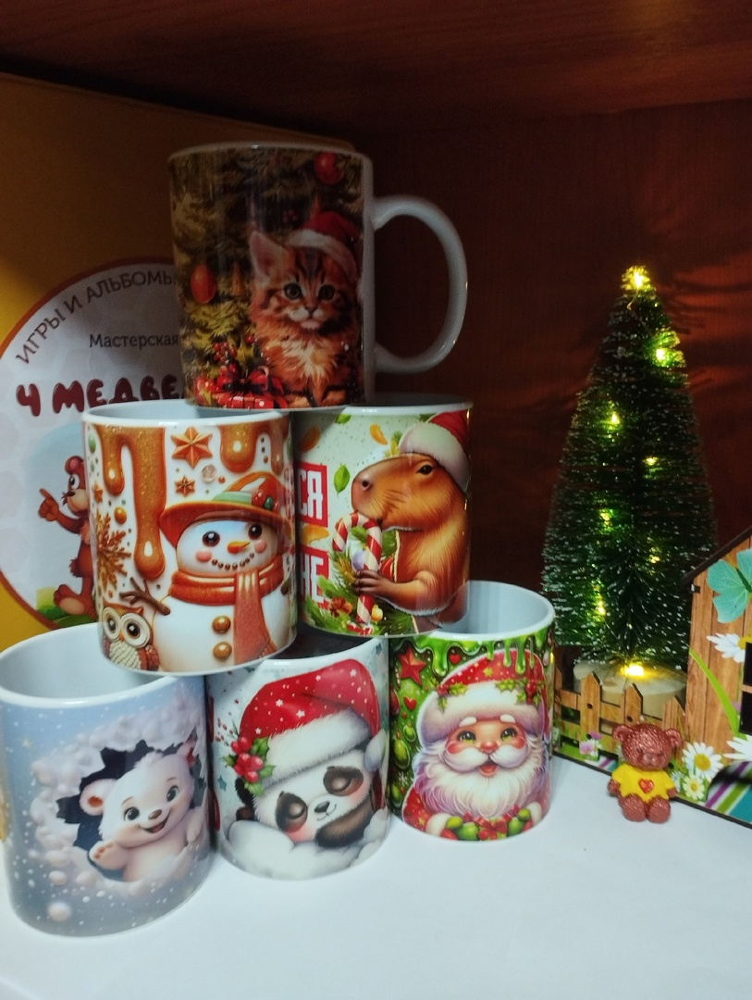
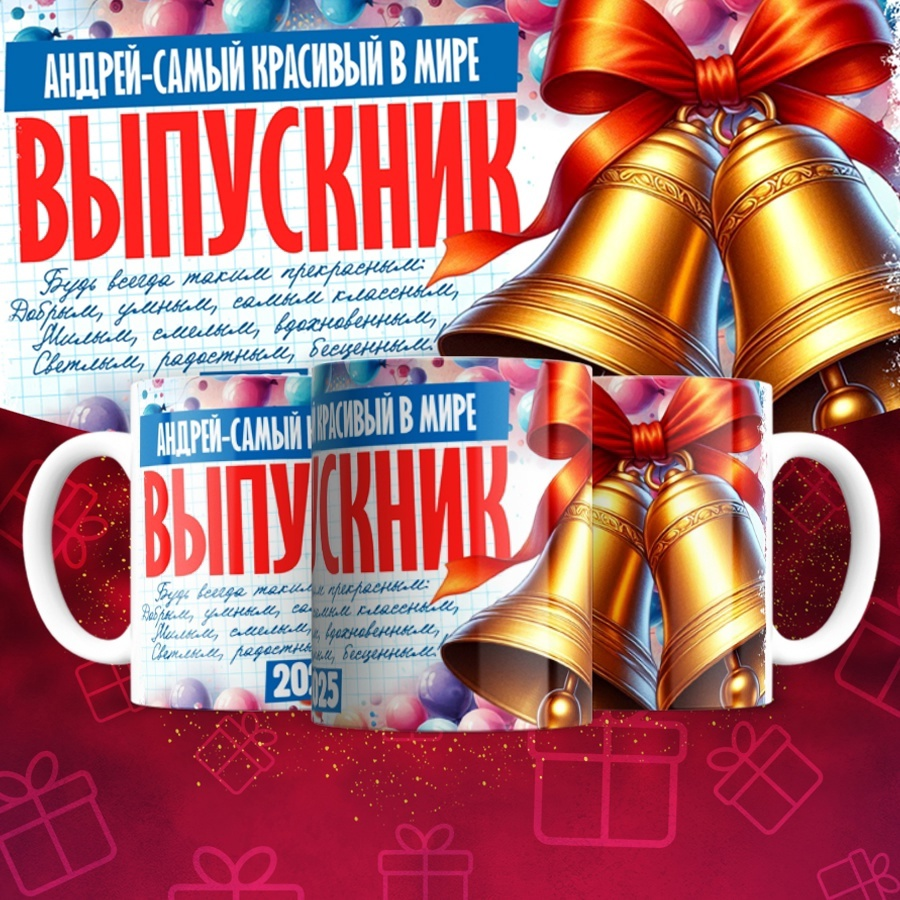

До курса доход составлял от 5 до 20 тысяч рублей в месяц, с 10 клиентами и средним чеком 500 рублей. После прохождения курса и внедрения новых стратегий, доход вырос до 50 тысяч рублей и выше, а количество клиентов увеличилось от 40 до 180 человек в месяц со средним чеком от 1500 рублей.
Благодаря новым знаниям, смогла оптимизировать свой бизнес, увеличить средний чек и направить усилия на более прибыльные направления.
Юлия Жидова живет в Верещагино, изготавливает различные сувениры, печать на кружках и футболках и расказала нам свою историю.
Мы взяли у нее короткое интервью:
— Юля, что было до курса, какой средний доход был в месяц? Сколько клиентов?
— До прохождения курса средний доход был от 5000 до 20000 тысяч. Подписчиков в группе было до 300. Клиентов постоянных 10 человек, и приходили новые по 1-3 человека в месяц. Средний чек был 500 рублей. В этот период думала что заброшу это дело так и не начав полноценно работать. Был раздутый ассортимент разнообразных услуг и товаров. Думала что не свою нишу выбрала, бралась за мелких клиентов. За 1 услугу ценник от 10 до 100р. Было очень тяжело во всех отношениях.
Не могла полноценно предложить клиенту ничего, не могла разобраться в потребностях и как лучше преподнести информацию. Жесть ещё та была!
— Ого, действительно не просто было. Какие сложности были во время обучения на нашем курсе? Насколько сложно было учиться? За сколько прошла обучение?
— Курс мне очень легко дался, в усвоении информации сложностей не было. Было сложно заставить себя, поднять ленивую ж..ку и начать применять знания на деле. Курс прошла чуть медленнее чем планировала, но это не страшно. Главное, я благодаря вам и вашему курсу приобрела бесценные знания, которые использую, причём частично.

После того как начала применять заказы повалили и сейчас работаю над тем, чтобы выработать полезные привычки выделять время на себя и семью.
— Каково было работать с куратором, что было полезно, мотивировало ли это тебя? Как считаешь, без куратора получилось бы так же?
— Со мной работала Александра. Прекрасная девчулька, столько эмоций и конструктивной критики получила. Без неё было бы возможно так же, но гораздо дольше. "Вовремя полученный совет приравнивается золотому кладу. Всегда своевременно, а предназначен не для всех”
— Какие сейчас действия делаешь для привлечения клиентов? Как часто пишешь посты? Запускаешь ли рекламу?
— Сейчас иногда прозванию по клиентской базе, сарафан работает, выставляю простые посты, не напрягаясь из серии "Смотри что делаю" В моём случае это работает.
Большинство клиентов меня сами ищут.
А так, участвую в нетворкингах, фестивалях, бизнес завтраках, бизнес играх и трансформационных играх. Где могут быть новые клиенты. В большинстве ко мне обращаются больше через личные сообщения и рекомендации друзей и клиентов. В целом мне работы хватает. Рекламу так и не запускала.
— А можешь поделиться, как изменилась жизнь, когда увеличился доход? Может что-то купила себе? Съездила в путешествие? Что-то смогла сделать, чего раньше не могла позволить себе)
— Доходы выросли прилично более 50000 в месяц. Рассчиталась с частью долгов, планируем покупку машины и дома в ближайший год. Большая часть денег уходит на развитие бизнеса, в планах шагать больше и шире. Выход на маркетплейсы.

— Все, остался только вопрос, сколько сейчас зарабатываешь? Сколько в среднем в месяц? Сколько клиентов? А вот примерно сколько за год было прошедший заработано?
— Сейчас доход вырос выходит от 50к и выше. В год – не скажу)
Клиентов от 40 человек, максимально в месяц было 180 человек.
Средний чек 1500-2000 рублей. И с каждым месяцем сумма растет.
Всем довольна, работаю в кайф, часто теперь стараюсь дома бывать с мужем и детьми.
Запустила новый вид продукции, убрала менее рентабельный и трудозатратный, тоже в топку. Работа в кайф, для меня настоящее счастье!
— Класс) Очень рада твоим успехам!